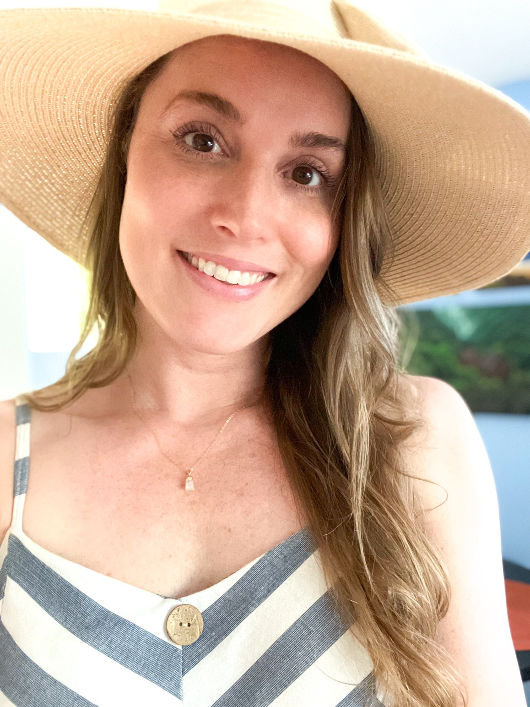

About Me
I have a deep understanding of communications and website design, backed by 7 years of hands-on experience in digital marketing and nonprofit website management.
My ability to design, manage, and optimize online communications ensures that your message not only reaches the right audience but leaves a lasting impact. With a strong foundation in UI/UX principles, content strategy, and brand storytelling, you’ll find my skills, creativity, and grit to be exactly what you need to help you achieve — and exceed — your goals.
I’m passionate about building meaningful connections through thoughtful design and strategic communication, and I’m excited to bring that energy to your team.